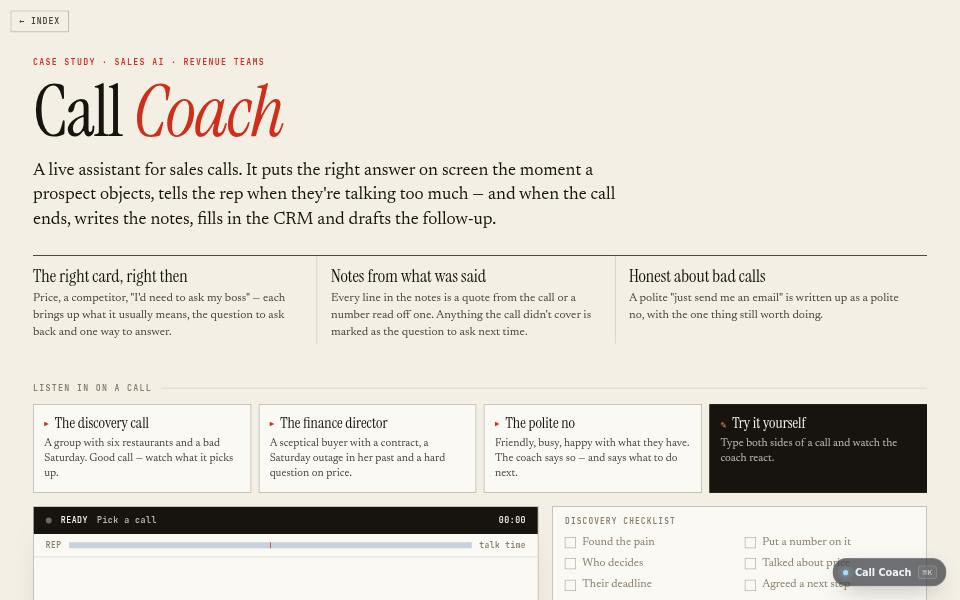

AI product · about 4 min · The Product Archipelago
Call Coach
A live assistant for sales calls: the right answer on screen the moment a prospect objects, and the notes, CRM record and follow-up written when the call ends.

The problem
Reps lose deals on the same objections, and nobody writes the call up properly afterwards.
What it does
- Puts the right battlecard on screen the moment a prospect objects
- Writes MEDDICC notes, a CRM record and the follow-up email when the call ends
- Nudges the rep when they pitch before finding a problem or do most of the talking
The most interesting decision
Every quote in the notes was actually said
The notes and the follow-up quote the prospect’s own words, and a test checks every quoted line against the call, so the summary cannot put words in anyone’s mouth.
Built with
- Moment tagger: 17 kinds
- Spoken-number parser
- MEDDICC notes
- CRM record + follow-up
- Quote checking
Evidence
27 of 28 new lines tagged exactly right, first time; every quote in its notes checked against the call. Read its tests
Its world
An amphitheatre with a radio mast. Speech drifts round it and the right card lights up.